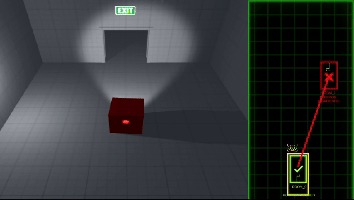
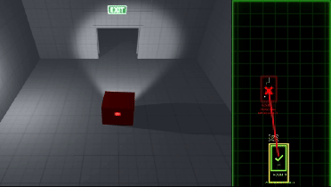
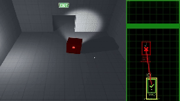
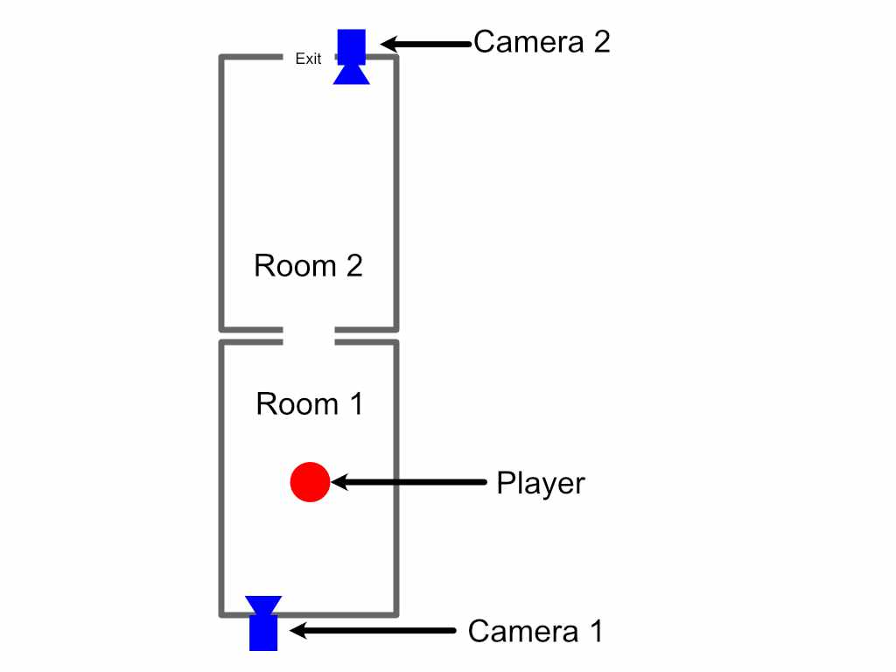
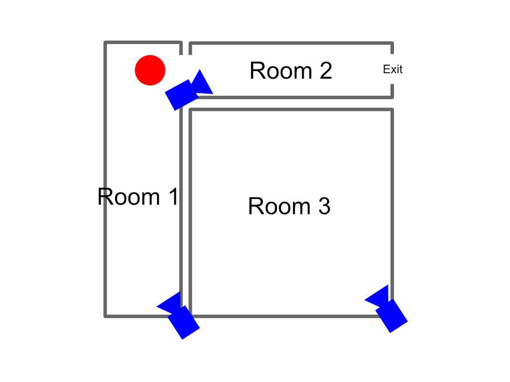

ROBERT LI >>> VESSELtechnical game designer |
|||
| Discord |
I've always found inspiration in the unexpected dialogue between design and exploration. While browsing architectural monographs in cozy coffee shops and chic boutiques, I’d get lost in the visual stories of unique spaces. As I studied each design, I would imagine myself wandering through them—moving fluidly from one striking locale to another, occasionally veering off course to uncover hidden details.
In those moments, I realized I was mentally mapping out these environments, creating a personal blueprint of discovery. That spark of insight led me to create a game that captures this very journey, inviting you to explore and navigate through spaces as you’ve never experienced before.
To test the potential of this vision, I built my very first prototype. My plan was to present players with a series of carefully chosen static shots and simplified room layouts that capture the essence of each space. The challenge? First, to mentally map out the environment and then accurately recreate that layout using an intuitive map interface.
In those moments, I realized I was mentally mapping out these environments, creating a personal blueprint of discovery. That spark of insight led me to create a game that captures this very journey, inviting you to explore and navigate through spaces as you’ve never experienced before.

On the left, a live camera feed immerses you in the environment, capturing every detail in real time. On the right, an interactive map awaits your input—inviting you to plot and reconstruct the layout of the spaces you observe. This split-screen design seamlessly connects real-time exploration with strategic mapping, turning every moment into a dynamic challenge.

Players can explore different areas by switching between multiple cameras. As you toggle your view, the interactive map updates in real time: a yellow box frames the room corresponding to the active camera, clearly indicating your current perspective.

A subtle light in front of your character signals the direction they’re facing, setting the stage for spatial discovery. By toggling between two cameras, you can discern the spatial relationship between each camera’s position and the corresponding rooms. Then, by dragging the red box—representing the second room—on the interactive map to its proper place, you complete the layout. Once the map is accurate, the door opens, and you progress to the next stage of your journey.

This is the layout of the 2 rooms.
In later levels, the challenge intensifies. To map the rooms, players must focus on the details—paying close attention to the shapes and positioning of lights. These elements provide the clues needed to understand the layout and continue progressing. for a couple of seconds
n later levels, players must scrutinize details—especially light patterns and shapes—to accurately map each room.
Camera 1: An empty room bathed in red light. A vertical crack runs along the left wall, while a horizontal crack marks the right.


Camera 2 & 3: In these views, you see two additional rooms. In room 1, the red light projects vertically, while in room 2 it spills horizontally. Your challenge is to connect:
This is the layout of the 3 rooms.

After extensive playtesting, I identified two major issues with the prototype. First, players felt they lacked meaningful actions—it ended up feeling more like an architectural exam than a game. Second, the primary objective and the use of the interactive map weren’t clearly communicated.
In puzzle games, knowing what to do and how to do it is crucial. On the positive side, playtesters loved scanning through multiple cameras, uncovering hidden parts of the space, and watching the character emerge in unexpected rooms. These insights have given me a clear direction, and I’m excited to iterate and refine the experience further.